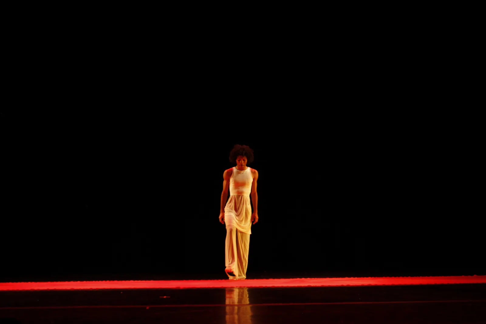

Bowdoin College
In 2023 was personally selected by the Dean of Students at Bowdoin to work with the College’s Communications Office as a multimedia correspondent. Since then, I’ve met weekly with the President and SVP of Communications to ensure consistent messaging between students, staff, faculty, and the border community. I’ve grown as a communicator, editor, and storyteller. I’m proud to say that the content I’ve produced has been the most engaged on the college’s social media channels to date. If you’d like to learn more about my work, I’ve left a brief sample of my experience here.